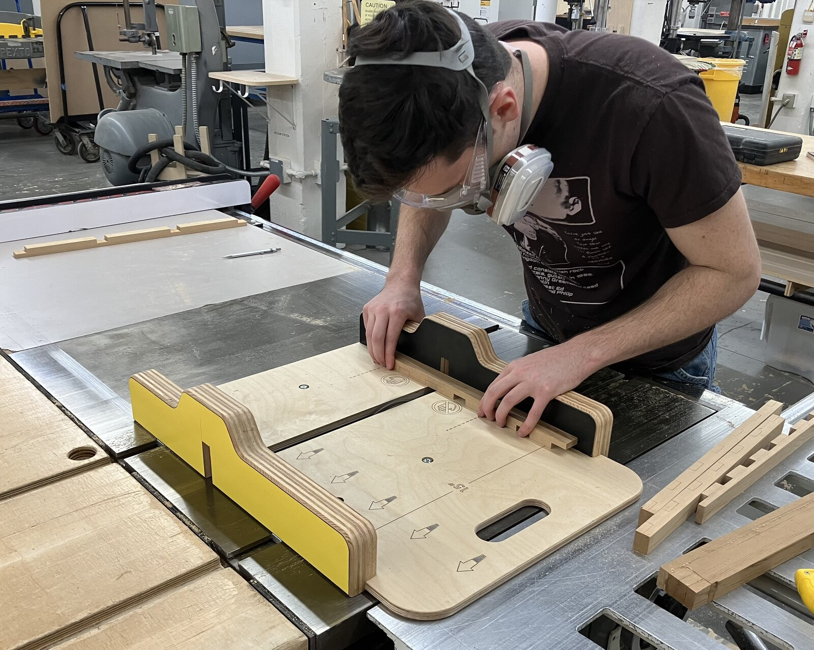
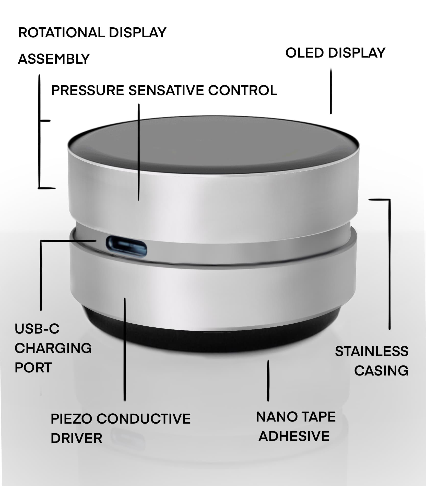
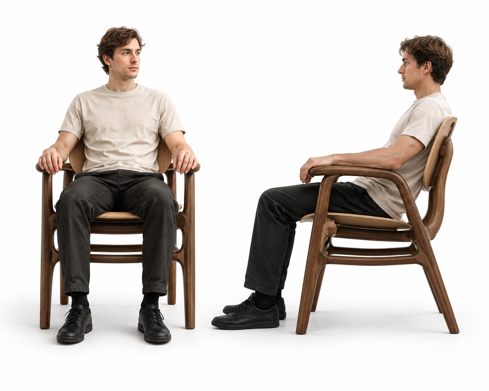

✕
‹
›
From early sketch to working prototype — I like solving problems that end up in your hands.


A wellness-driven productivity concept pitched to Dell's leadership: a piezo-speaker ornament paired with a companion app, presented through a fully illustrated user-story comic.
View all 8 photos →Out of a wide-ranging ideation phase — acrobatic prosthetic legs, stilt attachments, a webbed hand for swimming — a mechanical finger concept stood out and became the focus: a passive, linkage-driven prosthetic hand for transradial amputees. What I expected would require 5-axis CNC machining turned out to be achievable almost entirely with 2D laser-cut components, proven first with a wire-and-foamcore prototype. The final design uses laser-cut stainless steel for nearly every structural element, with a few milled parts and rubber fingertip pads. I also simplified the palm from a solid volume to a planar profile, cutting material and complexity without losing function.
Laser-cut stainless linkage does the work of a motor — no motors required.
Developed for a studio investigating housing and mobility — renting itself is the mobility angle — this project tackles a familiar roommate problem: shared refrigerators that get disorganized fast, continuing a space-saving interest from that fall's transforming chair project. The result is a portable divider system that keeps each person's section separate, uses adjustable clips to fit different fridge depths, and packs up to move with you between apartments. Early prototypes relied on off-the-shelf suction cups, which lost their grip within a day, so I designed a custom mechanical suction mechanism to hold the divider firmly in place long-term.
A custom mechanical suction mechanism — no off-the-shelf hardware needed.
A side chair that folds flat into a wall-mounted painting to save space in small apartments. Early prototypes used a solid carved seat pan, which proved too heavy and uncomfortable for extended sitting. I redesigned the seat as a hollow frame inspired by a stretched canvas, added 3D-printed joints to attach the back legs, and used a wool-felt pad to keep the profile low while adding comfort. The front is hand-painted, so when folded, the piece reads as a framed painting with almost no visible seam.
A hollow, canvas-inspired frame replaces a solid carved seat — half the weight, all the comfort.
A STEAM kit teaching upper-elementary kids the science of music through instruments they build themselves: a tunable PVC flute, fillable shaker eggs, claves cut to different lengths to demonstrate how size affects pitch, and a frame drum made from wood, goat skin, and glue. An illustrated instruction booklet walks kids through assembly and breaks down concepts like rhythm, tone, and pitch. User testing with real kids surfaced specific, useful feedback — inconsistent shaker-egg tension, confusing assembly steps — that reinforced how much early testing shapes a design meant for a very particular age group.
A tunable PVC flute and hand-cut claves — real instruments, built from hardware-store parts.

Interning with furniture designer Bernardo Urbina in Costa Rica — operating a CNC router, building shop components, and developing speculative chair concepts for potential production.
View all 8 photos →I like devising practical, but creative solutions to design problems. Working at a custom furniture shop taught me to be creative, but always design for the client first.